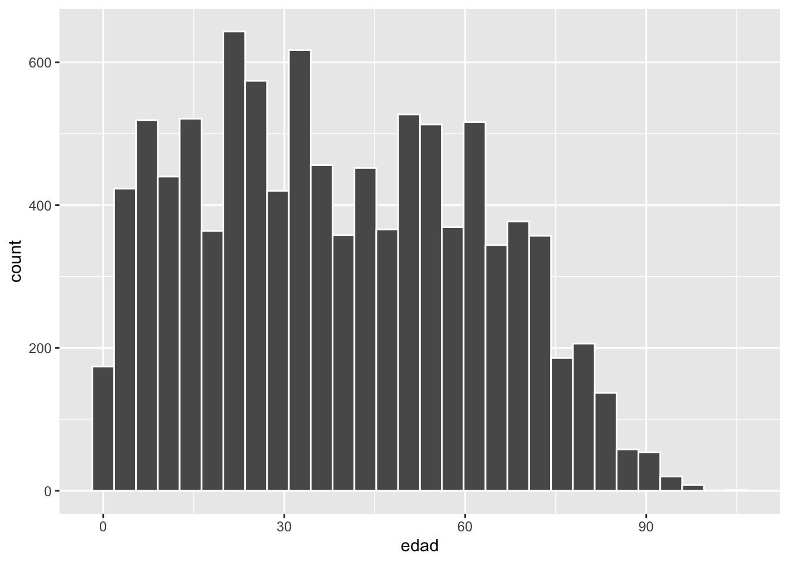
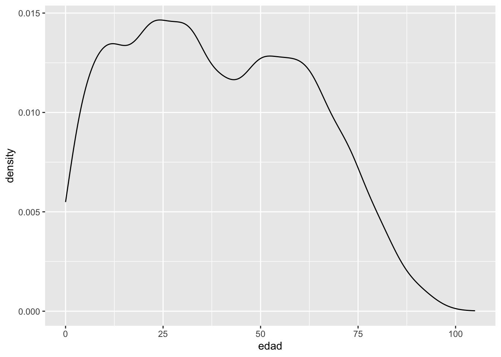
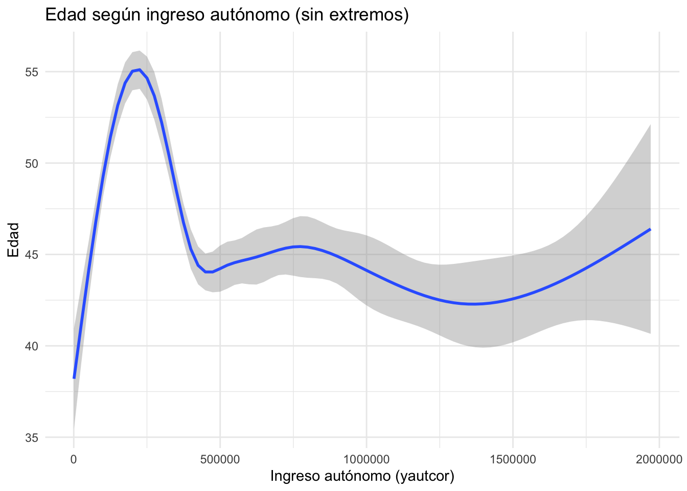
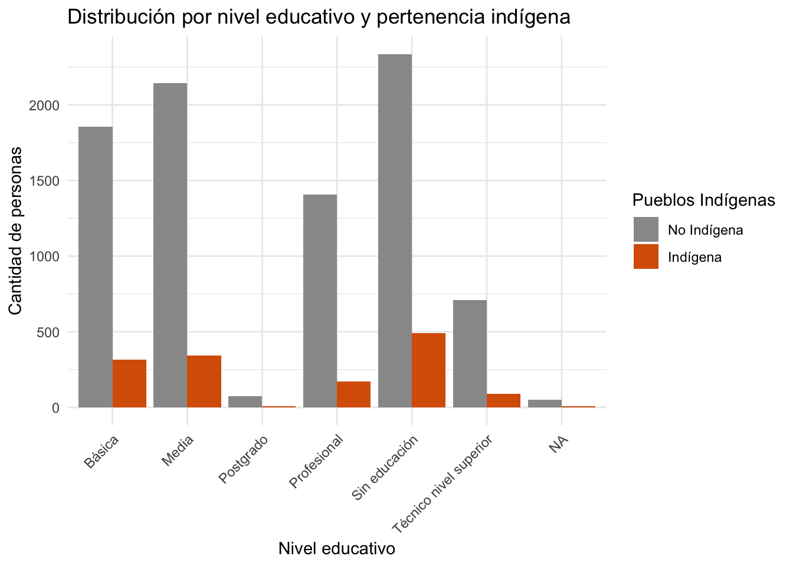
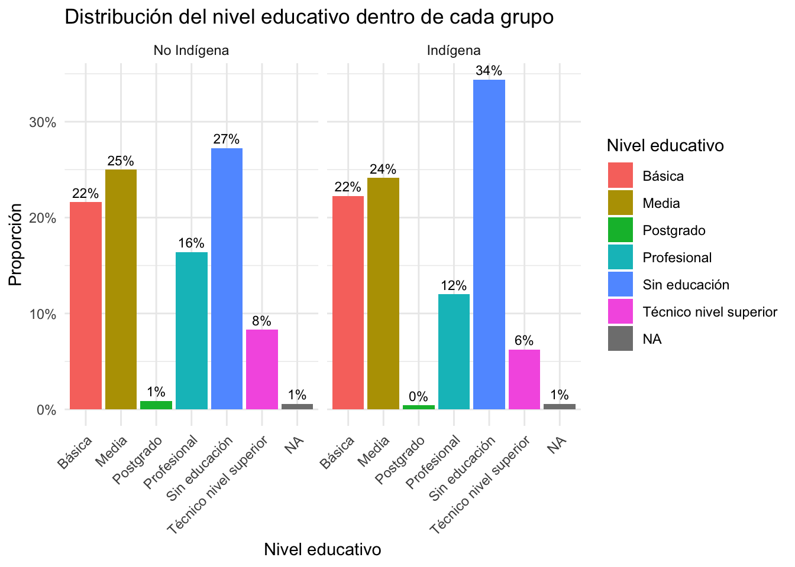

# tidyverse: manipular datos, filtrar, agrupar, resumir y visualizarlibrary(tidyverse)
── Attaching core tidyverse packages ──────────────────────── tidyverse 2.0.0 ──
✔ dplyr 1.1.4 ✔ readr 2.1.5
✔ forcats 1.0.0 ✔ stringr 1.5.1
✔ ggplot2 3.5.1 ✔ tibble 3.2.1
✔ lubridate 1.9.4 ✔ tidyr 1.3.1
✔ purrr 1.0.4
── Conflicts ────────────────────────────────────────── tidyverse_conflicts() ──
✖ dplyr::filter() masks stats::filter()
✖ dplyr::lag() masks stats::lag()
ℹ Use the conflicted package (<http://conflicted.r-lib.org/>) to force all conflicts to become errors
# ggplot2: crear visualizaciones con sistema de capaslibrary(ggplot2)
2 Descargar y cargar datos
# Definimos la URL y el nombre del archivourl <-"https://raw.githubusercontent.com/centrociir/interculturales/refs/heads/main/clases/clase1/bbdd/casen2022_sample.csv"destfile <-"casen2022_sample.csv"# Descargamos el archivo desde GitHubdownload.file(url, destfile, mode ="wb")# Cargamos el CSV descargado en un dataframecasen <-read.csv(destfile, encoding ="UTF-8")
3 Inspeccionar los primeros datos
# Mostrar primeras filas del dataset para conocer la estructuratibble::as_tibble(head(casen))
El histograma permite visualizar la distribución de la variable numérica edad dentro del conjunto de datos. Esta es una de las formas más directas de explorar cómo se distribuyen los valores de una variable continua.
Pasos del código:
casen |> ggplot(aes(edad)): inicia el gráfico utilizando la base de datos casen y mapea la variable edad al eje X.
geom_histogram(color = "white"): agrega una capa de histograma (barras), usando el color blanco para el borde de las barras.
`stat_bin()` using `bins = 30`. Pick better value with `binwidth`.

4.2 Densidad por pertenencia a pueblo indígena
Este gráfico muestra la distribución de la edad usando curvas de densidad, diferenciadas por el grupo de pertenencia indígena. A diferencia del histograma, las curvas de densidad suavizan la forma de la distribución y permiten comparar grupos más claramente.
Pasos del código:
casen |> ggplot(aes(edad, colour = pueblos_indigenas)): se define el gráfico base, mapeando la variable edad al eje X y asignando un color distinto según la variable pueblos_indigenas.
geom_density(): añade la geometría de densidad, que estima la distribución de la variable edad.
Warning: The following aesthetics were dropped during statistical transformation:
colour.
ℹ This can happen when ggplot fails to infer the correct grouping structure in
the data.
ℹ Did you forget to specify a `group` aesthetic or to convert a numerical
variable into a factor?

4.3 Densidad de ingresos según pueblo indígena
Este gráfico permite observar cómo se distribuye el ingreso autónomo (yautcor) en la población, distinguiendo entre personas indígenas y no indígenas. Se utiliza una curva de densidad para facilitar la comparación entre ambos grupos.
Pasos del código:
mutate(...): convierte la variable pueblos_indigenas en un factor con etiquetas legibles: "No Indígena" y "Indígena".
filter(yautcor < 100000): excluye valores extremos de ingreso para evitar que distorsionen el gráfico.
ggplot(...): inicia el gráfico asignando la variable yautcor al eje X, y diferenciando los grupos por fill y color.
geom_density(alpha = 0.6): genera curvas de densidad con cierta transparencia (alpha = 0.6) para que se puedan ver las superposiciones.
labs(...): define título y etiquetas de los ejes.
theme_classic(): aplica un tema con fondo blanco y sin cuadrículas para una presentación más limpia.
Este gráfico muestra la relación entre la edad de las personas y su ingreso autónomo (yautcor), con una distinción por pertenencia indígena. Se utiliza un gráfico de puntos para visualizar la dispersión de los datos individuales.
Pasos del código:
filter(yautcor < 1000001): filtra valores extremos de ingreso para mantener solo observaciones dentro de un rango razonable.
ggplot(...): inicializa el gráfico asignando yautcor al eje X y edad al eje Y.
colour = as.factor(pueblos_indigenas): transforma la variable pueblos_indigenas en factor para colorear los puntos por grupo.
geom_point(alpha = 0.3): agrega puntos con transparencia (alpha = 0.3) para evitar saturación visual en zonas densas.
labs(...): agrega un título claro y etiquetas a los ejes.
theme_minimal(): aplica un diseño limpio con fondo blanco y sin bordes.
Este gráfico representa la tendencia general entre el ingreso autónomo y la edad, sin mostrar los puntos individuales. Es útil para detectar patrones globales cuando hay muchos datos.
Pasos del código:
filter(yautcor < 2000000): elimina outliers con ingresos extremadamente altos para evitar que afecten la tendencia.
ggplot(...): define el mapeo estético con yautcor en el eje X y edad en el eje Y.
geom_smooth(): agrega una línea suavizada que estima la relación entre ambas variables, utilizando por defecto un modelo de regresión local (loess).
labs(...): define el título del gráfico y los nombres de los ejes.
`geom_smooth()` using method = 'gam' and formula = 'y ~ s(x, bs = "cs")'

5 Gráfico de barras
5.1 Conteo de personas por condición indígena
Este gráfico muestra cuántas personas en la muestra se identifican o no con un pueblo indígena. Es útil para visualizar la distribución de esta variable categórica.
Pasos del código:
ggplot(aes(x = factor(pueblos_indigenas))): se transforma la variable pueblos_indigenas en un factor, para que ggplot2 la trate como una categoría en el eje X.
geom_bar(): genera un gráfico de barras contando automáticamente las observaciones por categoría.
labs(...): define el título del gráfico y los nombres de los ejes.
scale_x_discrete(...): reemplaza las etiquetas “0” y “1” por “No Indígena” e “Indígena”.
theme_minimal(): aplica un tema limpio y moderno al gráfico.
casen |>ggplot(aes(x =factor(pueblos_indigenas))) +geom_bar() +labs(title ="Distribución según pertenencia a pueblo indígena",x ="Pertenencia",y ="Cantidad" ) +scale_x_discrete(labels =c("0"="No Indígena", "1"="Indígena")) +theme_minimal()
Este gráfico de barras compara la cantidad de personas por nivel educativo, diferenciando entre quienes se identifican como indígenas y quienes no. Al usar position = "dodge", las barras se colocan una al lado de la otra, permitiendo comparar los grupos dentro de cada nivel educativo.
Explicación paso a paso:
ggplot(tabla_educ, aes(...)): se define la base del gráfico con la tabla tabla_educ, especificando:
x = educ_nivel: eje X representa los niveles educativos.
y = n: eje Y representa la cantidad de personas.
fill = factor(pueblos_indigenas): las barras se rellenan según la pertenencia indígena.
geom_col(position = "dodge"): crea un gráfico de columnas usando los valores exactos (no conteos automáticos), y separa las barras por grupo.
labs(...): agrega título y etiquetas a los ejes y leyenda.
scale_fill_manual(...): personaliza los colores de cada grupo:
Gris para “No Indígena”
Naranja para “Indígena”
También se cambian las etiquetas para que sean legibles.
theme_minimal(): aplica un tema claro y limpio.
theme(...): rota las etiquetas del eje X 45 grados para mejorar su legibilidad
ggplot(tabla_educ, aes(x = educ_nivel, y = n, fill =factor(pueblos_indigenas))) +geom_col(position ="dodge") +labs(title ="Distribución por nivel educativo y pertenencia indígena",x ="Nivel educativo",y ="Cantidad de personas",fill ="Pueblos Indígenas" ) +scale_fill_manual(values =c("0"="#999999", "1"="#D95F02"), labels =c("No Indígena", "Indígena")) +theme_minimal() +theme(axis.text.x =element_text(angle =45, hjust =1))

5.5 Calcular proporciones dentro de cada grupo
tabla_educ_por_grupo <- tabla_educ |>group_by(pueblos_indigenas) |>mutate(prop = n /sum(n)) |>ungroup()
5.6 Gráfico de barras por grupo con facetas
ggplot(tabla_educ_por_grupo, aes(x = educ_nivel, y = prop, fill = educ_nivel)) +geom_col() +geom_text(aes(label = scales::percent(prop, accuracy =1)), vjust =-0.5, size =3) +facet_grid(~ pueblos_indigenas, labeller =as_labeller(c("0"="No Indígena", "1"="Indígena"))) +scale_y_continuous(labels = scales::percent_format()) +labs(title ="Distribución del nivel educativo dentro de cada grupo",x ="Nivel educativo",y ="Proporción",fill ="Nivel educativo" ) +theme_minimal() +theme(axis.text.x =element_text(angle =45, hjust =1))

6 Gráfico de tendencia con GSS
Este bloque de código procesa la base de datos gss_cat del paquete forcats, con el fin de calcular la proporción de personas que se identifican como “Strong Democrat” en EE.UU., desagregado por raza y año.
library(forcats)gss_party_race <- gss_cat |>filter(!is.na(partyid), !is.na(race)) |># 1. Elimina valores perdidos en partido y razagroup_by(year, race, partyid) |># 2. Agrupa por año, raza y afiliación partidariasummarise(n =n(), .groups ="drop") |># 3. Cuenta el número de casos por combinacióngroup_by(year, race) |># 4. Reagrupa por año y razamutate(prop = n /sum(n)) |># 5. Calcula la proporción que representa cada partidoungroup() # 6. Elimina agrupacionesvoto_duro <- gss_party_race |>filter(partyid =="Strong democrat")
6.1 Gráfico de tendencia final
ggplot(voto_duro, aes(x = year, y = prop, color = race)) +geom_line(size =1.2) +geom_point(size =2) +scale_y_continuous(labels = scales::percent_format(accuracy =1))
Warning: Using `size` aesthetic for lines was deprecated in ggplot2 3.4.0.
ℹ Please use `linewidth` instead.